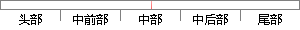

任务链表和任务块的基本模型如下所示。
片段位置图

相似结果
相似片段： 生成的任务流程模型如下所示。 SharePoint Designer ...(关联、启动和任务),更改表单参数、局部变量和关联...工作流更改基本启动选项和关联的任务和历史记录列表。...
| 标题 | 《将任务流程编辑器用于审批工作流 - SharePoint Designer - Office...》 |
| 对比库 | PaperRater云论文库 |
| 网址 | http://office.microsoft.com/zh-cn/sharepoint-designer-help/HA101863538.aspx |
| 相似率 | 85.71% （严重抄袭） |
※ 片段修改建议 ※
近似词参考：- 基本：根基 根本
- 如下：以下
- 任务：使命 义务
- 模型：模子
系统自动生成语句： 使命链表和使命块的根基模子以下所示。
注：本片段修改建议为系统自动生成，仅供参考。